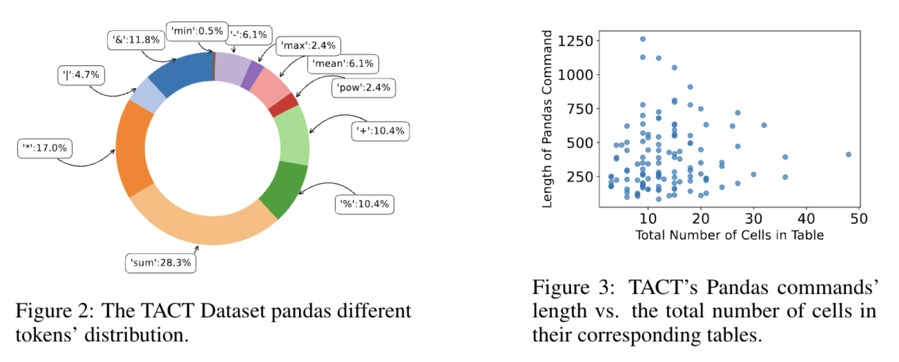

TACT was created by NLP and data science experts, who employed a rigorous annotation process to transform instances from the InstructIE dataset into a format suitable for aggregative instruction following. Creating the data includes the steps of assessing the text and the table, then formulating a query in natural language, and finally, translating the query into a Pandas command, and executing it on the table.
TACT requires models to solve multiple implicit sub-tasks, that require deep text comprehension and complex reasoning. It also offers a diverse set of Pandas commands, modeling multiple computational and aggregative challenges over texts. The Pandas command in TACT have varying lengths, independently from their associated tables.

To address the challenges in TACT, we broke down the problem into manageable tasks: table-generation, Pandas command-generation, and command-execution. By analyzing LLM performance with TACT's ground-truth data, we discovered opportunities to enhance model performance using targeted few-shot prompting. This led to the development of the IE as a tool framework, which uses few-shot prompted LLMs to independently handle each task, building on the outputs of the previous steps. This modular approach improves the performance of LLMs on TACT, as show that this new method achieves up to a 12% improvement in performance over traditional prompting techniques.
We evaluate several LLMs on our TACT benchmark. The performance results reveal that our new prompting approached, termed IE as a tool, consistently outperforms the other few-shot prompting techniques, yet there is still a room for improvement on this challenging task.
@misc{caciularu2024tact,
title={TACT: Advancing Complex Aggregative Reasoning with Information Extraction Tools},
author={Avi Caciularu and Alon Jacovi and Eyal Ben David and Sasha Goldshtein and Tal Schuster and Jonathan Herzig and Gal Elidan and Amir Globerson},
year={2024},
eprint={2406.03618},
archivePrefix={arXiv},
primaryClass={cs.CL}
}